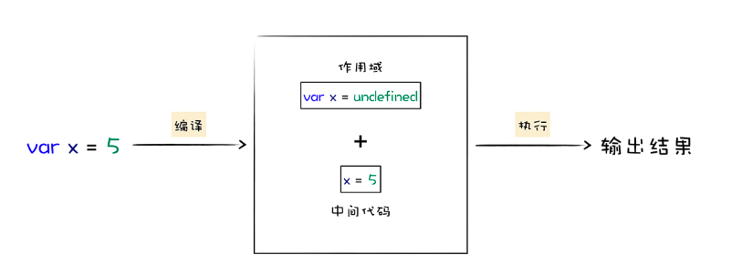
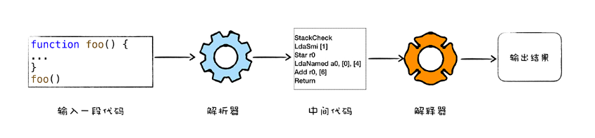
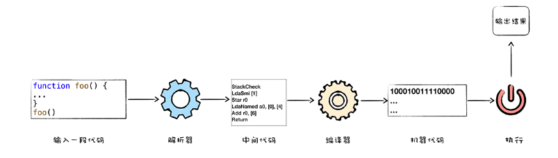
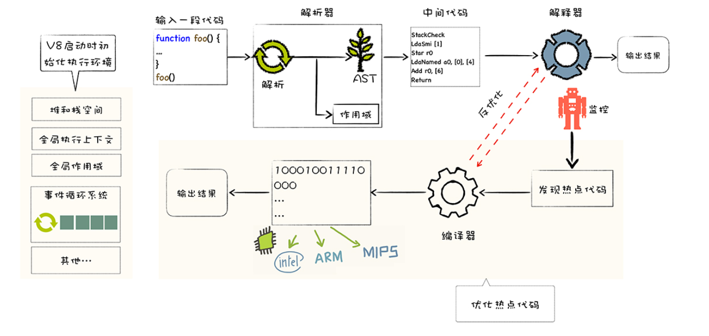

01 | V8是如何执行一段JavaScript代码的？
什么是v8?
v8是一个由google开发的js引擎,目前用在chrome浏览器和node.js中,其核心功能是执行易于人类理解的js代码
高级代码为什么需要先编译在执行?
主要核心流程分为编译和执行两步
- 首先需要将js代码转换成低级中间代码或者机器能够理解的机器代码
- 然后执行转换后的代码并输出执行结果

cpu只能识别机器指令,但是对于程序员来说,二进制代码难以阅读和记忆,于是我们将二进制指令集转换为人类可以识别和记忆的富符号,这就是汇编指令集.
汇编语言的不好之处
- 不同的cpu有着不同的指令集
- 在编写汇编代码的时候,我们需要了解和处理器架构相关的硬件知识.比如你需要使用寄存器,内存,操作cpu等.我们在编写应用的时候,只想专心处理业务逻辑,并不想要过多理会这些处理器架构相关的细节
因此我们需要一种屏蔽了计算机架构细节的语言,能适应多种不同cpu架构的语言,只专心处理业务逻辑的语言,比如c,c++,java,c#,Python,js等这些高级语言
执行高级语言的方法
- 解释执行:首先将输入的源代码通过解析器编译成中间代码,之后直接使用解释器解释执行中间代码,然后直接输出结果,具体流程如下 
- 编译执行:采用这种方式,也需要先将源代码转换成中间代码,然后我们的编译器再将中间代码转换成机器代码.通常编译成的机器代码是以二进制文件形式存储的,需要执行这段程序的时候直接执行二进制文件就可以了,还可以使用虚拟机将编译后的机器代码保存在内存中,然后直接执行内存中的二进制代码 
不同的浏览器对js这一门语言的实现也是不同的,例如safari使用的是jscore虚拟机,firefox使用了traceMonkey虚拟机,而chrome则使用了v8虚拟机
v8是怎么执行js代码的?
实际上v8并没有采用某种单一的技术,而是混合编译执行和解释执行这两种手段,我们把这种混合使用编译器和解释器的技术称为jit技术 这是一种权衡策略,因为这两种方式都有各自的优缺点,
- 解释器执行的启动速度快,但是执行时的速度慢
- 编译执行的启动速度慢,但是执行时的速度快

v8启动执行js之前,他需要准备执行js时所需要的一些基础环境,包括堆栈空间,全局作用域,消息循环系统,内置函数等.
- js全局执行上下文就包括了执行过程中的全局信息,比如一些内置函数,全局变量等信息
- 全局作用域包含了一些全局变量,在执行过程中的数据都需要存放在内存中
- v8采用了经典的堆和栈的内存管理模式,所以v8还需要初始化内存中的堆和栈机构
- 还需要初始化消息循环系统,消息循环系统包含了消息驱动器和消息队列,它如同v8的心脏,不断接受消息并决策如何处理消息
相信你注意到了，我们在解释器附近画了个监控机器人，这是一个监控解释器执行状态的模块，在解释执行字节码的过程中，如果发现了某一段代码会被重复多次执行，那么监控机器人就会将这段代码标记为热点代码。
当某段代码被标记为热点代码后，V8就会将这段字节码丢给优化编译器，优化编译器会在后 台将字节码编译为二进制代码，然后再对编译后的二进制代码执行优化操作，优化后的二进 制机器代码的执行效率会得到大幅提升。如果下面再执行到这段代码时，那么V8会优先选择 优化之后的二进制代码，这样代码的执行速度就会大幅提升。 不过，和静态语言不同的是，JavaScript是一种非常灵活的动态语言，对象的结构和属性是可 以在运行时任意修改的，而经过优化编译器优化过的代码只能针对某种固定的结构，一旦在 执行过程中，对象的结构被动态修改了，那么优化之后的代码势必会变成无效的代码，这时 候优化编译器就需要执行反优化操作，经过反优化的代码，下次执行时就会回退到解释器解 释执行。理解了这一点，我们就可以来深入分析V8执行一段JavaScript代码所经历的主要流程了，这 包括了: 解释执行和编译执行都有各自的优缺点，解释执行启动速度快，但是执行时速度慢，而编译 执行启动速度慢，但是执行速度快。为了充分地利用解释执行和编译执行的优点，规避其缺 点，V8采用了一种权衡策略，在启动过程中采用了解释执行的策略，但是如果某段代码的执 行频率超过一个值，那么V8就会采用优化编译器将其编译成执行效率更加高效的机器代码。 因为计算机只能识别二进制指令，所以要让计算机执行一段高级语言通常有两种手段，
- 第一种是将高级代码转换为二进制代码，再让计算机去执行;
- 另外一种方式是在计算机安装一个解释器，并由解释器来解释执行。
V8是由Google开发的开源JavaScript引擎，也被称为虚拟机，模拟实际计算机各种功能来实 现代码的编译和执行。那么，要想搞清楚V8内部的工作流程和原理，我们可以从分析计算机 对语言的编译和执行过程入手。
- 初始化基础环境
- 解析源码生成AST和作用域
- 依据AST和作用域生成字节码
- 解释执行字节码
- 监听热点代码
- 优化热点代码为二进制的机器代码
- 反优化热点代码为二进制的机器代码